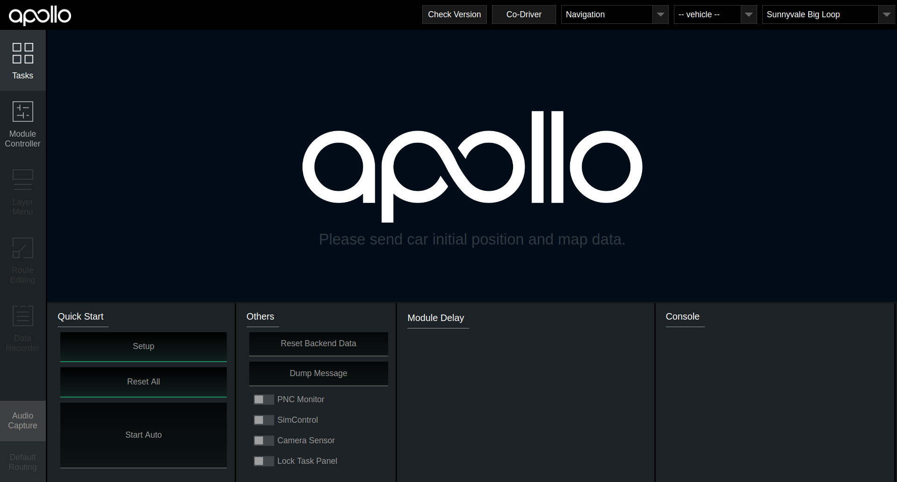
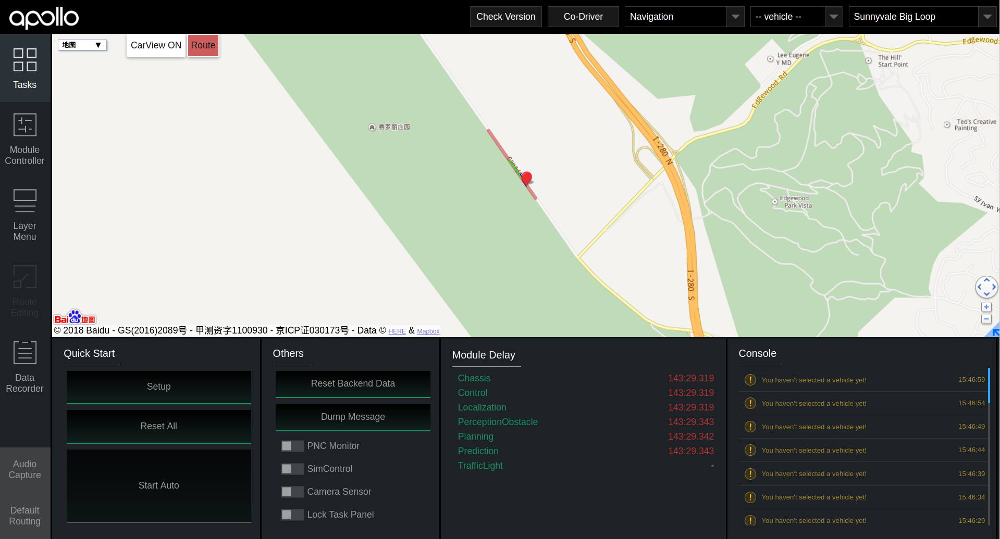

Apollo导航模式教程#
1. 教程简介
无人驾驶系统利用实时感知信息和静态地图信息构建出完整驾驶环境，并在构建的环境中，依据routing数据，规划出行车轨迹，并由控制模块执行完成。Apollo导航模式在上述的框架下，针对高速、乡村道路等简单道路场景，进行了以下的提升：
- Apollo导航模式以提高安全性和稳定性为目的，在驾驶环境中加入了静态引导信息，引导在驾驶环境中的轨迹规划，使其更安全更舒适。同时，引导信息也降低了对驾驶环境的完整性的要求 -- 即降低了对地图信息的要求。
- Apollo导航模式使用了相对/车身坐标系。减少了sensor数据的转化。同时也支持各种驾驶模式之间的转化，以应对不同的驾驶场景和条件。
- Apollo导航模式引入了百度地图的Routing功能，考虑实时路况信息，使得Routing的结果更实用，更精确，更稳定。也使得Apollo系统更易于落地和商用。
在本教程中，你将完成
学习完本教程后，你将能够在导航模式下进行规划模块（planning）的线下调试和开发。
在本教教中，你将掌握
- 如何设置Apollo导航模式
- 如何利用云端指引者发送指引线
- 如何利用录制的ros bag产生指引线并用线下指引者发送
- 如何进行规划模块的调试
在本教程中，你需要如下准备
-
下载并编译Apollo最新源码（Howto）
2. 配置导航模式
在导航模式下，有以下几个参数需要进行配置：
- 感知方案：目前支持摄像头方案（CAMERA）和基于Mobileye的方案（MOBILEYE）
- Apollo UTM Zone
- 规划模块的Planner：目前支持EM, LATTICE, 和NAVI三种
- 系统限速：单位为米/秒
在Docker下修改配置文件
配置文件位于：
/apollo/modules/tools/navigation/config/default.ini
默认配置为：
[PerceptionConf]
# three perception solutions: MOBILEYE, CAMERA, and VELODYNE64
perception = CAMERA
[LocalizationConf]
utm_zone = 10
[PlanningConf]
# three planners are available: EM, LATTICE, NAVI
planner_type = EM
# highest speed for planning algorithms, unit is meter per second
speed_limit = 5
该默认配置为Apollo 2.5 Demo bag录制时的配置，在此教程中，我们直接使用。
生效配置信息
为了使配置生效，在Docker内的Apollo根目录下，运行如下命令
in_dev_docker:/apollo$ cd /apollo/modules/tools/navigation/config/
in_dev_docker:/apollo/modules/tools/navigation/config$ python navi_config.py default.ini
3. 云端指引者的使用
回放demo bag
在进入Docker，启动Apollo之前，我们把Apollo2.5 demo bag 拷贝到Apollo代码根目录下的data目录中。
在Docker内编译成功后，我们用如下命令启动Dreamview：
in_dev_docker:/apollo$ ./scripts/bootstrap.sh start
并在本地浏览器中打开
http://localhost:8888
如下图所示，在模式框中选择“Navigation”。

然后在Docker内的apollo根目录下运行如下命令进行bag播放
in_dev_docker:/apollo$cd data
in_dev_docker:/apollo/data$rosbag play demo_2.5.bag
播放开始后，可以看到Dreamview界面如下
请求云端指引线
在地图中选择一个目的地（沿canada路），点击地图视图中的红色Route按钮，云端指引者会接收到这个请求，并返回指引线，该指引线会被显示在地图视图中。如下图所示。
以上就是云端指引者的调用过程。
4. 离线指引者工具的使用
目前云端指引者只覆盖了有限的区域。除了云端的服务之外，我们还提供了离线指引者工具来制作和发送线下指引线。在本教程中，我们以Apollo2.5 demo bag为例来生成指引线。
指引线的制作
生成指引线的步骤为
- 从bag中提取路径数据
in_dev_docker:/apollo$cd modules/tools/navigator
in_dev_docker:/apollo/modules/tools/navigator$python extractor.py /apollo/data/demo_2.5.bag
提取出来的路径数据在路径
in_dev_docker:/apollo/modules/tools/navigator$
中的
path_demo_2.5.bag.txt
- 平滑路径数据
in_dev_docker:/apollo/modules/tools/navigator$bash smooth.sh path_demo_2.5.bag.txt 200
平滑后的的数据在
in_dev_docker:/apollo/modules/tools/navigator$path_demo_2.5.bag.txt.smoothed
指引线的发送
得到平滑后的数据就可以发送到Apollo系统中，作为指引线，步骤为：
in_dev_docker:/apollo/modules/tools/navigator$python navigator.py path_demo_2.5.bag.txt.smoothed
发送完成后，Dreamview的地图视图中的红色指引线会更新为如下图所示：

5. 规划模块的调试
调试数据准备
利用bag来进行模块调试，首先要把bag中的相应ros message过滤掉。假设我们想要调试规划模块，我们需要把消息
/apollo/planning
过滤，使用以下命令
in_dev_docker:/apollo$cd data
in_dev_docker:/apollo/data$rosbag filter demo_2.5.bag demo_2.5_no_planning.bag "topic != '/apollo/planning'"
过滤后的bag位于
in_dev_docker:/apollo/data$demo_2.5_no_planning.bag
规划轨迹的产生
我们播放没有规划的bag，用下面的命令
in_dev_docker:/apollo/data$rosbag play demo_2.5_no_planning.bag
在Dreamview中我们会看到车辆的规划轨迹没有输出，如下图
我们在Dreamview中打开Navi Planning模块，如下图

我们看到实时计算的车辆的规划轨迹显示在Dreamview中。这时你可以试着更改一些规划模块的配置
in_dev_docker:/apollo/modules/planning/conf$planning_config_navi.pb.txt
去了解，这些参数会对规划结果有什么影响。或者修改规划算法的代码，进行调试。
6.结束
恭喜你完成了本教程。现在你应该了解
- 如何设置Apollo导航模式
- 如何利用云端指引者发送指引线
- 如何利用录制的ros bag产生指引线并用线下指引者发送
- 如何进行规划模块的调试
你也可以试着利用demo bag对其他一些模块进行调试。